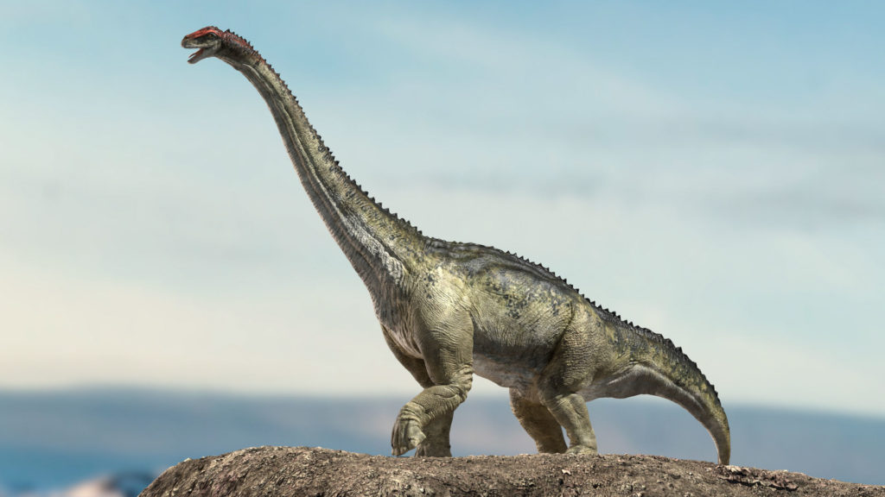
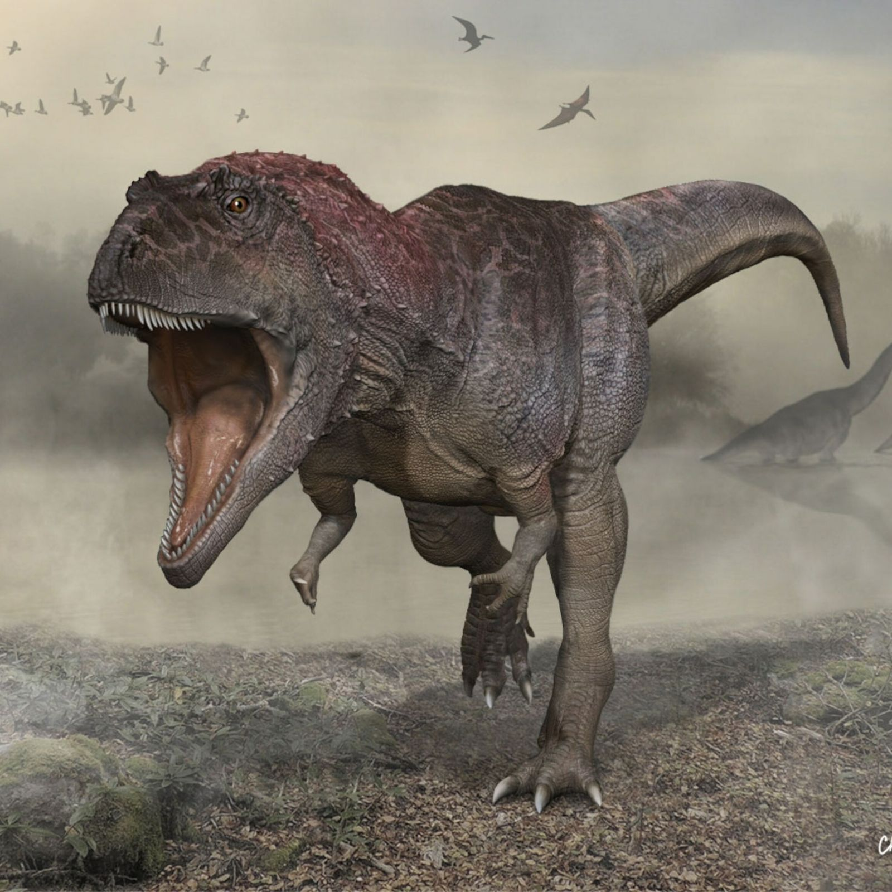
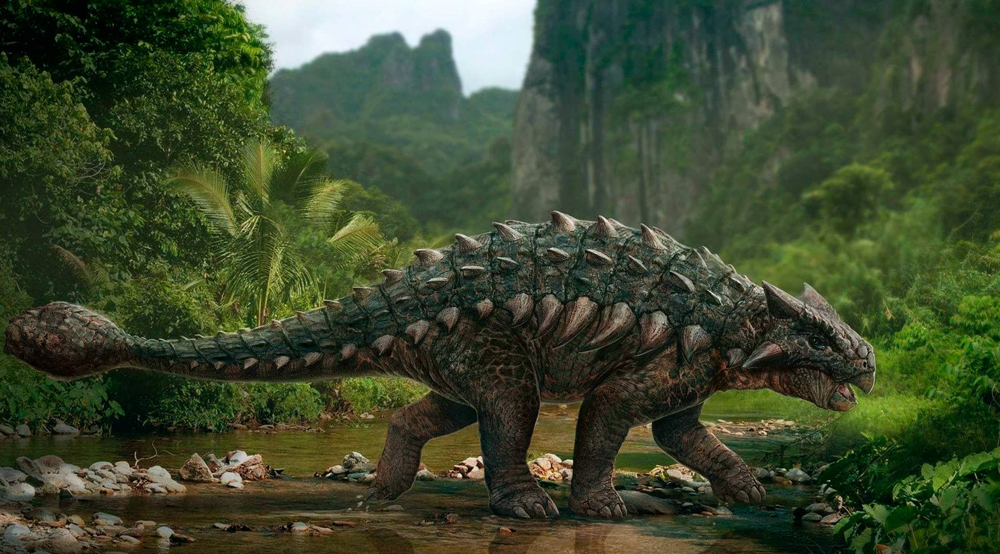
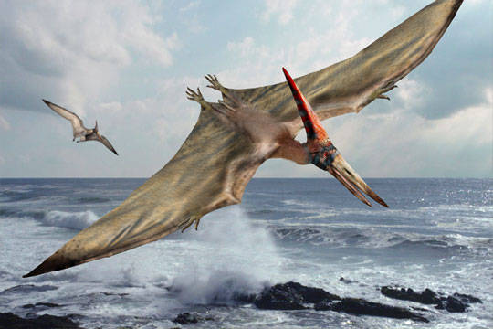
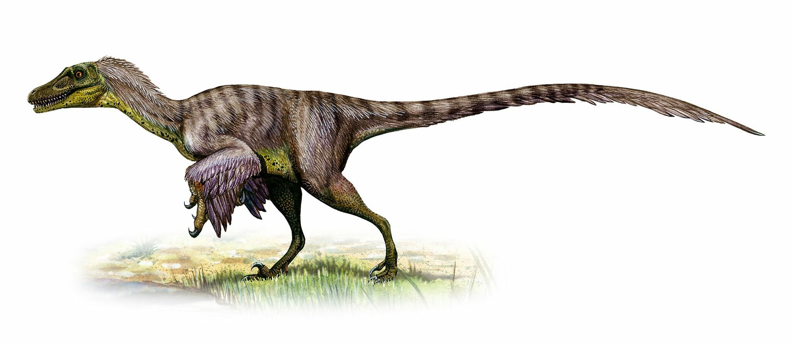

Inicio
Tyrannosaurus

Plesiosaurus
Ankylosaurus
Pterodactilo
Velociraptor

Brontosaurus (gr. βροντή, brontē 'trueno' y σαῦρος, sauros 'lagarto', "lagarto trueno"), o brontosaurio en castellano, es un género de dinosaurio saurópodo diplodócido que vivió a finales del periodo Jurásico hace aproximadamente entre 155 a 152 millones de años en la época del Kimmeridgiense de Norteamérica. Se conocen tres especies de este género.
Brontosaurus fue originalmente nombrado por su descubridor Othniel Charles Marsh en 1879. Brontosaurus por mucho tiempo había sido considerado como un sinónimo más moderno de Apatosaurus, y la especie original, Brontosaurus excelsus fue reclasificada como A.excelsus en 1903. Sin embargo, un extenso estudio publicado en 2015 concluyó que Brontosaurus es un género válido de saurópodo y distinto de Apatosaurus. En el mismo estudio se reclasificó a dos especies que habían sido consideradas anteriormente como parte de Apatosaurus como Brontosaurus parvus y Brontosaurus yahnahpin. Las especies de Brontosaurus se extienden en un rango temporal de 155 a 152 millones de años, durante la época del Kimmeridgiense de la zona inferior a media de la Formación Morrison en Wyoming y Utah, en Estados Unidos.
Brontosaurus era un animal cuadrúpedo grande dotado de un cuello largo y larga cola en forma de látigo. Sus patas delanteras eran levemente más cortas que las traseras. La especie más grande, B.excelsus, pesaba más de 15 toneladas y medía más de 22 metros de longitud de la cabeza a la cola.
El cráneo no ha sido hallado, pero probablemente era parecido al de su pariente cercano Apatosaurus louisae. Como ocurre en otros saurópodos, las vértebras del cuello se encontraban bifurcadas; es decir, poseían un par de espinas a los lados, dando como resultado un cuello ancho y grueso.5 La fórmula vertebral es: 15 cervicales, 10 dorsales, 5 sacrales y 82 caudales. Es considerable la variación en el número de vértebras caudales, incluso dentro de una misma especie. Las vértebras cervicales eran más robustas que en otros diplodócidos, aunque no en el mismo grado que en los ejemplares adultos de Apatosaurus. Las costillas dorsales no están fusionadas o articuladas estrechamente a sus respectivas vértebras, sino apenas articuladas.6 Hay diez costillas dorsales a cada lado del cuerpo. El cuello poseía un extenso sistema de sacos aéreos que lo aligeraban. Brontosaurus, como su pariente Apatosaurus tenía espinas altas en sus vértebras, las cuales suponían más de la mitad de la altura de los huesos individuales. La forma de la cola era inusual para ser un diplodócido, al ser comparativamente delgada, debido al rápido descenso de la altura de las espinas vertebrales a medida que se alejaban de las caderas. Brontosaurus además tenían costillas muy largas comparadas con muchos otros diplodócidos, lo que les daba torsos inusualmente altos. Como en otros miembros de su familia, la sección posterior de la cola de Brontosaurus poseía una estructura en forma de látigo.
Los huesos de las extremidades también son muy robustos, y los huesos del brazo son gruesos, con un húmero parecido al de Camarasaurus, y los de la especie B. excelsus son casi idénticos a los de Apatosaurus ajax. Charles Gilmore señaló en 1936 que las reconstrucciones anteriores proponían de manera errónea que el radio y el cúbito podían cruzarse, cuando en vida solo podían permanecer en paralelo. Brontosaurus tenía una única gran garra en cada pata delantera, mientras que en su pie solo los primeros tres dedos tenían garras. Incluso en 1936 ya se reconocía que ningún saurópodo tenía más de una garra preservada en su mano, y ese número máximo de garras es aceptado como un rasgo característico en el grupo entero. El hueso de la garra manual tiene una curvatura leve, y se acortaba justamente en el extremo frontal. Los huesos de la cadera incluían un robusto ilion, y el pubis e isquion fusionados. Los huesos de la tibia y el peroné en la pata posterior eran diferentes de los delgados huesos de Diplodocus, pero son sumamente similares a los de Camarasaurus. El peroné es más largo que la tibia, aunque también es más delgado.
Inicio |
 Tyrannosaurus |
Plesiosaurus |
|  Ankylosaurus |
 Pterodactilo |
 Velociraptor |